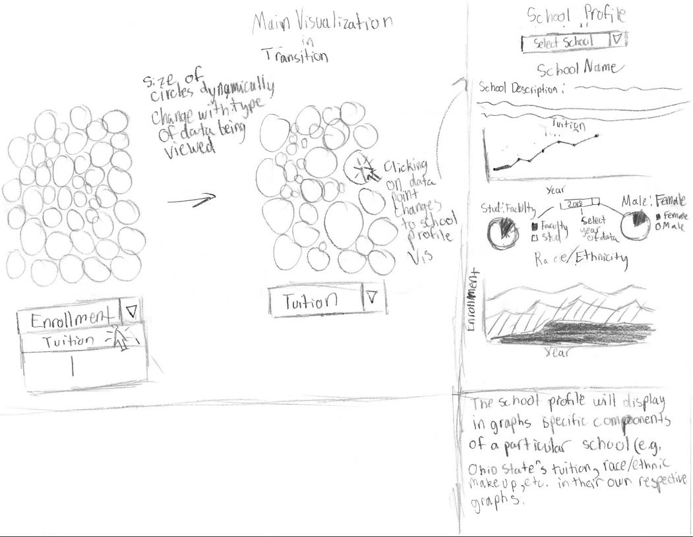
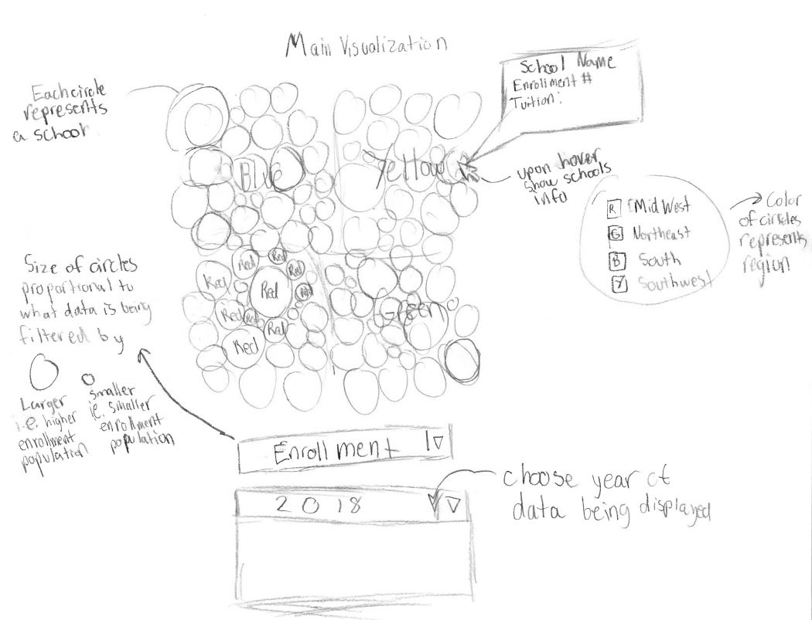
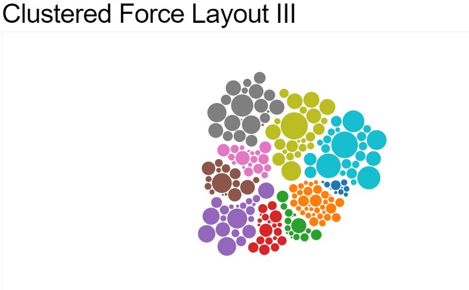
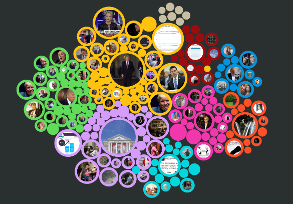
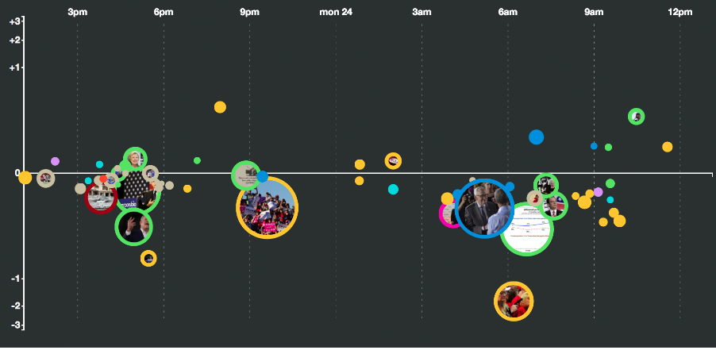
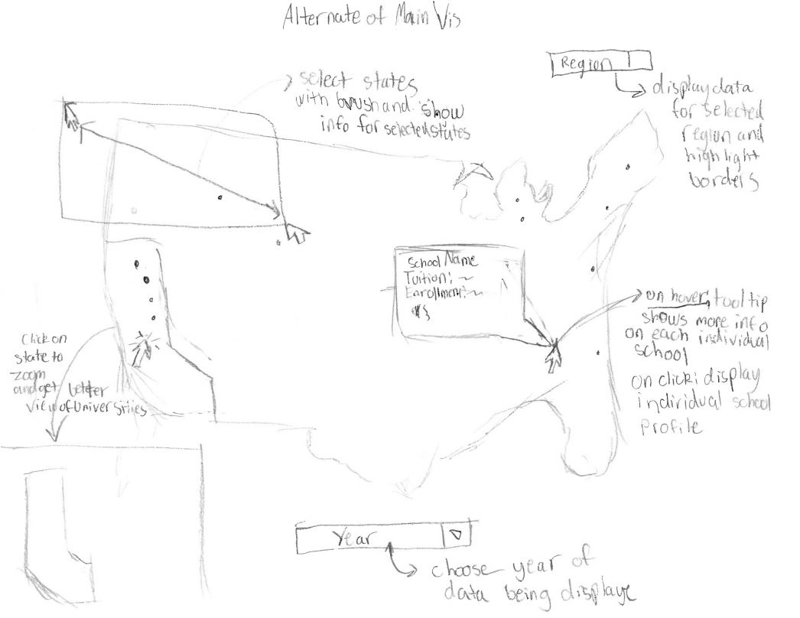

Collecting the data turned out to be much more time consuming then expected, so the majority of these two weeks was spent working on a scraper and the data wrangleing process. We sourced the data from asee.org which, was fairly standardized, but had some edge cases that made the collection of some data more difficult to collect (mainly the enrollment by ethnicity, gender, and major). Currently we have data on all schools from the years 1999-2018 that are present in all years. Most of the data we collected on each school, once wrangled, is fine to use, but there still remains a number of schools that contain "messed up" data. We are currently working on improving our scraper and/or our data wrangleing to be able to properly visualize these schools. We have implemented some of the visualizations that will be present on the school profiles. We worked on the school profiles instead of our main visualization because the school profiles can still work while some of the data is "messed up". Our goal is to fix the data this week so we can begin working on the main visualization. We have been working on different possible versions for our main visualization, which are shown below.
The idea with this version is to represent each school as a sphere and let the user pick attributes like tuition, or available majors, etc. and the spheres will become grouped based off their similarity within the selected attribute. Selecting a group will allow the user to view that group over the given year range and see how schools' values differ within their own group. Clicking on school will lead to that schools profile
 Examples of what we are trying to achieve in version 1
Source:https://bl.ocks.org/mbostock/7881887
 Source:https://hi.stamen.com/forcing-functions-inside-d3-v4-forces-and-layout-transitions-f3e89ee02d12
The idea with this version is to place each school on the map of the united states. If you click on a state you will zoom in on that state, which will allow you to better view the schools there You can brush over states and compare schools within those selected states. Hovering over a school shows its information. The state will also be split into regions that va nbe highlighted. Map can show either a single year or a range of years
Slashed out == task completed
Week of March 17
-Project proposal (due Mar 18)
-Perform Web Scraping
-Create Data Processing function
-Start Process Book
Week of March 24
-Create first visualization
-Start working on other visualizations
Week of March 31
-Milestone I - a functional project prototype (due Apr 1)
-Fix data
-Start working on main visualization
-Complete prototype school profile visualization
Week of April 7
-Complete all prototype main visualization
Week of April 14
-Milestone II - a fully functional prototype (due Apr 15)
-In-class user studies (Apr 18)
-Improve visualizatoins based off user suggestions
-Work on presentation
-Work on hosting visualization on website
Week of April 21
-Final project presentation (Apr 25)
-Assess visualization
-Complete all visualizations
-Create Screen Caste going through visualization
-Additional user testing
Week of April 28
-Final project submission & peer evaluations (due Apr 29)